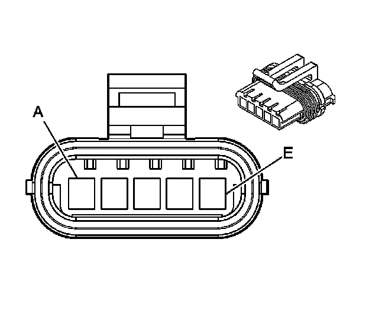
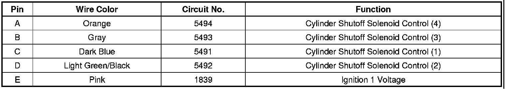
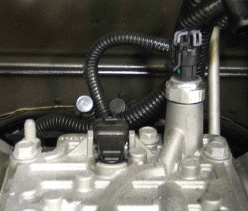
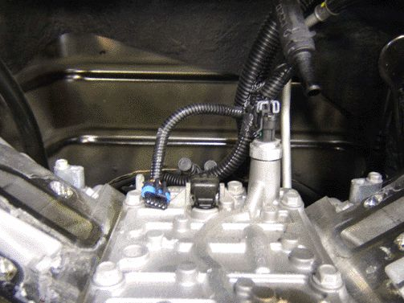
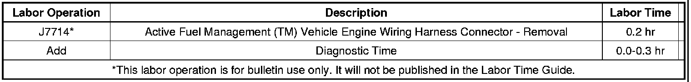

Engine Controls - Engine Wiring Harness Modification
INFORMATIONBulletin No.: 06-06-04-029A
Date: January 20, 2011
Subject: Information on Performing an Engine Wiring Harness Modification for L92 Replacement Engines Built without Active Fuel Management(TM) Hardware Components
Models:
2007 Cadillac Escalade, Escalade ESV, Escalade EXT
2007 GMC Yukon Denali, Yukon Denali XL
2WD Models Equipped with 6.2L VORTEC GEN IV V8 Engine (VIN 8 - RPO L92)
Attention:
2007 Cadillac Escalades and GMC Yukon Denalis with the L92 engine built prior to April 2006 were built with Active Fuel Management(TM) hardware components, but disabled. Replacement L92 engines built after April 1, 2006 were built without Active Fuel Management(TM) hardware components and a vehicle engine wiring harness modification must be performed.
Supercede:
This bulletin is being revised to add the 2007 GMC Yukon Denali, Yukon Denali XL models. Please discard Corporate Bulletin Number 06-06-04-029 (Section 06 - Engine/Propulsion System).
When performing an engine replacement on the models listed above with the L92 V-8 engine that was originally equipped with Active Fuel Management(TM) hardware components, a wiring modification must be performed to the 5-way VLOM (valve lifter oil manifold) vehicle engine wiring harness connector.
The replacement engines will not contain Active Fuel Management(TM) hardware components. Perform an engine inspection; VLOM 5-way connector will be located at lifter valley rear of engine. The vehicle wiring harness branch of the VLOM 5-way connector is located and attached at the center of the vehicle cowl.
If equipped, the repair procedure outlined in this bulletin will aid technicians in the removal of the vehicle engine wiring harness branch of the VLOM 5-way connector and seal and secure the wiring back in the main vehicle engine harness.
Tools and Parts Needed
The following tools will be needed to perform the repair:
- Heat Gun (J-25070)
- Wire Cutters
- Black electrical Tape
- 1 - 1/4" diameter (small) shrink tubing cut approximately 2-1/2"
- 1- 1/2" diameter (large) shrink tubing cut approximately 2-1/2"
VLOM 5-Way Engine Harness Connector



1. Locate the 5-way VLOM vehicle engine wiring harness connector. Refer to the above illustration.

2. Cut all 5 wires as close to the VLOM 5-way connector as possible. Refer to the above illustration.
3. Apply the small heat shrink tube, P/N 1235500, to circuit 1839, Pink wire only. Fold back the Pink wire separately approximately 25.4 mm (1 in) and seal the circuit individually with one piece of small shrink tubing cut approximately 63.5 mm (2.5 in).
4. Using a Heat Gun, apply hot air to shrink the tubing and allow the component to cool.
5. The following four circuits will be cut and taped together to create a separate bundle of wires out of these four circuits.
- Circuit 5494 Orange
- Circuit 5493 Gray
- Circuit 5491 Dark Blue
- Circuit 5492 Light Green/Black
6. Take the taped bundle of wires (four circuits) and Pink wire circuit 1839 (as completed in step 3) and apply the large heat shrink tube, P/N 12355005, to all five of these wires/circuits.
Notice
This is in effect a Heat Shrink over a Heat Shrink which isolates the 1839 Power Circuit from the Low Side Drive Circuits while effectively sealing the circuits from water intrusion.
7. Using the Heat Gun, apply hot air to shrink the tubing over the bundle wires and the separately sealed Pink wire.
8. Open the vehicle engine wiring harness conduit in order to place the shrink wrapped circuits into the conduit.
9. With all the wire circuits tucked into the conduit, tape over the vehicle wiring harness conduit at the cowl.
Parts Information
Warranty Information

For vehicles repaired under warranty, use the table.

Disclaimer